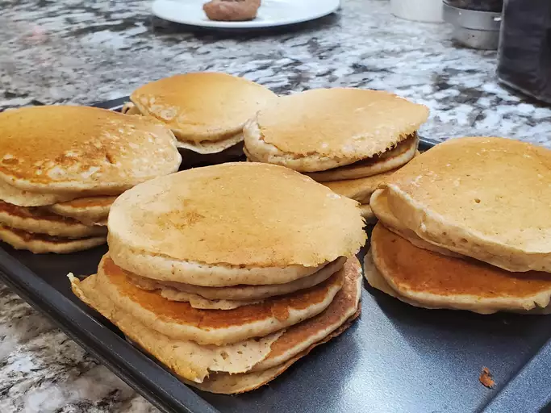

Banana Pancakes

Description
Wake up on the right side of the bed with a stack of sweet, cozy, and simple banana pancakes.
Ingredients
- Flour
- Sugar
- Baking Powder
- Salt
- 1 Egg
- Milk
- Vegetable Oil
- Bananas
Steps
- Mix. Stir until ingredients are incorporated
- Cook. Pour the batter in ¼ cup portions onto a lightly
oiled pan or griddle over medium-high heat. Cook for a few minutes,
flip with a spatula, and cook for another few minutes
- Serve. Add whatever toppings you like!